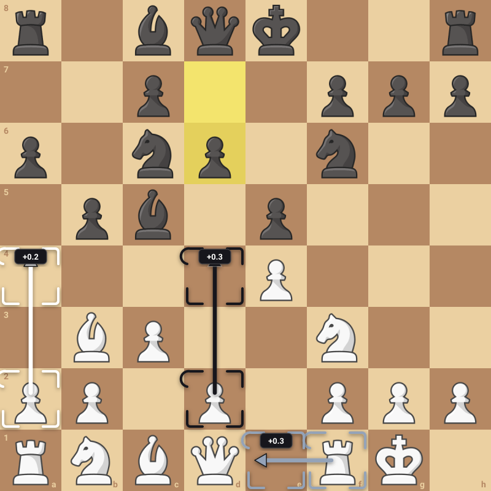

Визуальные стрелки лучших ходов, расчёт глубоких премувов и точная шкала преимущества в реальном времени на Chess.com и Lichess.org.

Плагин разработан в формате открытого стандарта расширений .xpi, что гарантирует максимальную производительность движка WebAssembly и отсутствие ограничений.
Windows • macOS • Linux • Android
Лучший браузер для шахматного ассистента! Полная свобода установки сторонних дополнений из файлов, сверхбыстрый движок и поддержка как на ПК, так и на смартфоне.
waterfox.net ↗Windows • macOS • Linux • Android
Классический браузер с мощным WebAssembly JIT-компилятором. На ПК поддерживается в Firefox Developer Edition / Nightly / ESR (с отключённой проверкой подписи), на Android — в Firefox Nightly или Waterfox.
mozilla.org ↗Windows • macOS • Linux
Ориентированный на приватность браузер на базе Gecko. Отлично подходит для запуска плагина на ПК без лишней слежки и телеметрии.
librewolf.net ↗.xpi и искусственно ограничивают производительность WebAssembly. Браузеры на базе Gecko (Waterfox / Firefox) работают на 40% быстрее и не блокируют работу шахматных нейросетей!
Всё для максимального комфорта, глубокого анализа и побед.
Показ лучшего хода (чёрный), второго (серый) и третьего (белый), либо режим 5 стрелок с бейджами оценки позиции.
Пока соперник думает над своим ходом, движок уже рассчитывает твой ответный ход и моментально показывает зелёную стрелку премува.
Точный процент шансов на победу в режиме реального времени, пересчёт преимущества в пешечном эквиваленте или количестве ходов до мата.
От ультра-быстрой Пули (50–150 мс) до глубокого позиционного анализа в Рапиде и Ультра-режиме (до 26 ходов глубины).
Стрелки не исчезают, когда ты берёшь фигуру в руку и перетаскиваешь её по доске. Ты всегда видишь, куда ставить фигуру.
Мгновенный выбор языка интерфейса в настройках виджета. Автоматическое определение языка браузера.
Простая установка в три шага без сторонних магазинов расширений.
Скачай файл chess-assistant.xpi по кнопке ниже:
В браузере Waterfox или Firefox открой страницу дополнений (нажми комбинацию клавиш Ctrl + Shift + A или введи в адресную строку about:addons).
Нажми на значок шестерёнки ⚙️ в правом верхнем углу ➔ выбери «Установить дополнение из файла…» (Install Add-on From File) и укажи скачанный .xpi. Готово!
Установи браузер Waterfox или Firefox Nightly из Google Play или официального сайта.
Скачай ультра-лёгкий пакет chess-assistant_phone.xpi (всего 1.2 МБ):
В мобильном Waterfox нажми меню (три точки ☰) ➔ Дополнения ➔ значок шестерёнки ⚙️ ➔ «Установить дополнение из файла». Выбери скачанный файл — и побеждай с телефона!